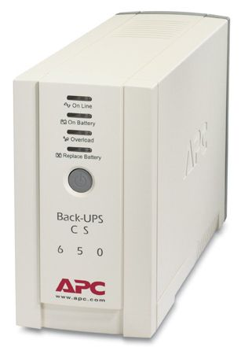

Jual Atap Lengkung di Medan ☎ ??? (www.dis.or.id)
Atap adalah bagian penting sebuah bangunan yang fungsinya untuk menaungi sebuah bangunan. Oleh karena itulah kita pastinya membutuhkan atap di setiap pembangunan. Pada kesempatan kali ini saya akan membahas beberapa jenis atap, seperti atap galvalum, atap lengkung, seng gelombang, plat seng & plat galvalum dan masih banyak lagi. Apa yang terjadi? Tentu anda tahu, atap tersebut tidak akan bertahan lama dan bahkan bisa langsung roboh karena tidak adanya pondasi yang menyangganya.
Distributor & Supplier Atap Lengkung

Selain berfungsi sebagai atap lengkung Medan sebuah bangunan baik itu rumah, kantor maupun stadion. Fungsi atap lengkung Medan ialah untuk menutupi seluruh bagian atas dari sebuah bangunan. Atap haruslah mempunyai sifat kedap air sehingga air hujan tidak akan merembes kedalam bangunan tersebut.
Bentuk dari setiap atap tersebut sangat beragam. Sehingga membuatnya tahan cuaca, bahkan ekstrim sekalipun. Atap lengkung mempunyai struktur yang sangat terkomposisi sehingga membuat bentuknya menjadi lengkung dan dapat dijadikan sebagai atap lengkung Medan.
Ya, apalagi jika bukan atap lengkung Medan. Nah, atap lengkung Medan inilah yang berjasa membuat stadion tersebut terlihat megah. Tentunya inilah yang anda inginkan sebagai konsumen yang menggunakan atap lengkung Medan sebagai pilihan anda. Bila anda mencari atap galvalum dengan lengkungan yang unik tersebut. Karena kami adalah tangan pertama yang bertindak sebagai supplier, toko sekaligus distributor.
Info Pemesanan Selengkapnya
Google Maps: https://www.google.com/maps/d/u/0/viewer?mid=1jTQUf9ULWdUIa8iDLwabVtcOdrQf8Eme&ll=-7.272623401464149%2C112.6482284&z=17
Note: https://www.facebook.com/notes/distributor-of-industrial-supply/pabrik-supplier-atap-lengkung/1782710675362145/
Event: https://www.facebook.com/events/137280070316926/
Portfolio Produk: https://www.facebook.com/pg/DistributorOfIndustrialSupplyDIS/photos/?tab=album&album_id=1683772021922678
Distributor & Supplier Besi Beton

Karena perkembangan suatu proses pembangunan maka hasil bola material yang dapat mendukung pembangunan tersebut agar terlihat lebih kokoh dan juga awet. Besi beton ulir yaitu besi beton dengan bentuk permukaan khusus bentuk sirip melintang seperti ikan ataupun dengan rusuk memanjang dan memiliki pola tertentu yang dipilih pada proses produksinya. Berikut fungsi dan kelebihan dari besi beton yaitu memiliki tekanan yang kuat dan lebih tinggi dibandingkan dengan bahan lainnya, tahan terhadap api dan air dan juga memiliki struktur terbaik pada bangunan jika banyak bersentuhan dengan air, memiliki struktur yang cukup kokoh, tidak memerlukan biaya pemeliharaan yang cukup tinggi, dapat dirakit dalam bentuk yang sangat beragam dan masih banyak lagi kelebihan yang bisa anda dapatkan dengan menggunakan Besi beton.
Besi beton terkenal sebagai bentuk besi yang memiliki kekuatan besar dan tahan terhadap berbagai guncangan dan tekanan.
Kedua jenis besi beton di atas dapat anda beli dengan mengunjungi situs dis.or.id. Dengan mengunjungi situs tersebut, anda bisa mendapatkan detail info serta harga yang pastinya sangat murah di bandingkan tempat lainnya. Kualitas dan mutunya pun telah terjamin. Jadi, anda tidak perlu ragu lagi.
Distributor & Supplier Steel Grating

Steel Grating kini dikenal sebagai salah satu produk yang bermanfaat untuk proses pembangunan. Steel grating sangat aman untuk digunakan pada beberapa kontruksi bangunan. Secara umum, produk ini digunakan dalam kontruksi lantai, kemudian deck, anak tangga pada bangunan pabrik kemudian, tambang minyak dan sejumlah bangunan industri lain nya. Grating ini disusun dari baja berkalit dan dilas di bagian permukaan silangnya. Karena harga murah tidak menjamin adanya kualitas yang terbaik. Terbuat dari bahan yang hot deep galvanis sehingga grating tidak mudah berkarat meskipun terkena air hujan di setiap harinya.
Kini anda bisa mendapatkan steel dengan mengunjungi dis.or.id. Disana anda bisa mendapatkan steel grating dengan berbagai ukuran tertentu dengan harga yang sangat terjangkau namun berkualitas dan bermutu tinggi.
Distributor & Supplier Pipa (Hitam/Gas, Galvanis)

Mungkin anda masih bingung mengenai manfaat pipa hitam ini dalam kehidupan, padahal jika dilihat lagi ada banyak manfaat yang diperoleh dengan mengaplikasikan pipa hitam gas galvanis. Setiap konstruksi bangunan pasti akan memanfaatkan jenis pipa hitam karena ia sangat kokoh, bahkan bagian luarnya telah terlapis oleh stainless steel sehingga menjadikannya tahan korosi. Terlihat dari namanya saja, pipa hitam ini memang dibuat khusus untuk kebutuhan pertambangan minyak gas, untuk itu nama lain dari pipa hitam adalah pipa gas. Karena sudah terlapisi dengan stainless steel pipa ini dapat diaplikasikan pada segala kondisi cuaca di Indonesia. Anda bisa memesan pipa hitam ini dari ukuran ½ inci sampai 40 inci. Anda dapat mengkonsultasikan keperluan pipa hitam tersebut pada kami dan mengetahui informasi harganya lebih detail.
Distributor & Supplier Kawat Bronjong/Gabion

Kawat bronjong kini dapat sering ditemui untuk berbagai kebutuhan pembanguna. Kawat ini juga ada yang berbahan galvanis. Bentuknya sama seperti kawat pada umumnya. Hanya saja, Anda harus tahu kawat ini terbuat dari baja. Selain itu, kawat ini juga digunakan sebagai pemecah gelombang ringan.
Jika anda sedang mencari kawat bronjong, anda bisa datang dan mengunjungi situs dis.or.id. Jika anda tengah membutuhkna kawat ini, anda bisa saja langsung mengunjungi dis.or.id. Tak hanya itu, kawat bronjong yang disediakn juga terdapat bermacam ukuran.
Distributor & Supplier WF H-beam

Besi WF kini banyak dikenal sebagai salah satu jenis profil baja Struktural yang berkualitas. Terlebih saat ini zaman sudah serta praktis dan mudah. Dari sisi kekuatan, jenis besi ini tergolong padat dan kuat selipun di tekan dan di tarik. Entah dari sisi kekuatan tekan nya atau tariknya. Di samping itu, besi ini juga mempunyai sisi padat yang bagus.
Maka dari itu, kualitasnya sudah terjamin.
Untuk itu bagi anda yang sedang mencari besi baja dengan kualitas terbaik. Harga yang di patok juga sangat terjangakau, jadi anda tidak perlu mengeluarkan budget terlalu banyak.
Distributor & Supplier Expanded Metal

Expanded metal atau yang dikenal juga dengan grid mesh ini adalah lembaran baja berbentuk jala dengan lubang-lubang yang homogen dan sangat cocok jika digunakan untuk berbagai aplikasi selain dari Pagar BRC. Expanded Metal memiliki corak yang sangat unik dengan berbagai bentuk berbeda. Selain itu, Expended Metal juga dikenal mampu menahan beban berat, memiliki permukaan yang anti slip/tidak licin, dan juga dikenal tahan karat untuk material yang dari alumunium.
Expanded Metal ada yang berbentuk diamond dengan model yang lebih menarik, kuat, ekonomis, serta tahan lama. Disana anda bisa menemukan dan memesan langsung expanded metal yang anda butuhkan.
Distributor & Supplier Plat (Hitam, Kapal, Bordes, Strip)

Namun yang terpenting pastikan anda membeli plat besi SNI. Plat besi memang ada yang tipis dan tebal, perihal ukuran ini akan kita sampaikan secara detail pada topik yang berbeda.
Di dis.or.id, anda dapat mendapatkan nya dengan harga lebih miring dibandingkan dengan toko besi lain nya. Dengan mengunjungi situs tersebut, anda bisa mengetahui secara detail segala jenis plat yang mungkin sedang anda butuhkan. Tak perlu khawatir harga, karena harga yang di patok pastinya sangat murah dan terjangkau.
Distributor & Supplier Floor Deck (Bondex)

Anda yang punya rencana pembangunan dan membutuhkan material untuk pengecoran lantai mungkin bisa menggunakan floor deck. Floor deck merupakan material yang tahan terhadapa api di bandingkan dengan material kayu lainnya. Selain itu, Floor Deck ini bisa dipasang pada konstruksi baja ataupun beton serta didukung dengan data perencanaan. Sedangkan untuk panjang dan juga lebarnya ada beberapa variasi.
Jika anda ingin mengetahui lebih lanjut mengenai floor deck ini, anda bisa langsung mengunjungi dis.or.id. Disana anda bisa mendapatkan floor deck yang anda inginkan. Pastinya dengan harga yang sangat terjangkau dan dengan mutu terbaik.
Distributor & Supplier Atap Galvalum

Dengan semakin panasnya bumi, maka di ruangan pun masih terasa suhu panas. Sifat galvalum yaitu ringan dan tipis namun memiliki kualitas tinggi.
Primadona galvalum ini dinilai lebih efektif jika dibandingkan dengan galvanis. Itulah sedikit perbedaan kecil dari rangka atap galvanis dengan kayu. Atap galvalum memang menjadi salah satu incaran atap saat ini dikarenakan galvalum dinilai banyak orang lebih efektif jika dibandingkan dengan galvanis.
Kayu dinilai kurang jika dibandingkan dengan galvalum. Bila bebannya berat maka anda harus memakai galvalum dengan ukuran yang lebih besar. Ini dikarenakan seng menyebabkan rumah anda menjadi terasa panas. Disini kami menyediakan galvalum yang tentunya sesuai kebutuhan dan dengan harga yang sangat kompromi khusus untuk anda yang membutuhkannya. Atap galvalum mempunyai banyak tipe, jenis dan ukuran yang sesuai dengan ukuran yang dapat anda pilih.
Distributor & Supplier Truss Canal C

Sudah tahukah anda apa yang dimaksud dengan galvalum? Galvalum memang istilah yang kerap kali kita dengar dan umumnya memang sangat erat kaitannya dengan baja. Bangunan yang menggunakan besi kanal c juga tidak sedikit. Kedua istilah tersebut merujuk pada sebuah benda yang sama. Sehingga gabungan keduanya menghasilkan kualitas yang bila ditandingkan dengan bahan gabungan lain maka tidak akan kalah berkualitasnya. Besi kanal C bisa menjadi pilihan yang tepat bila anda ingin membangun rumah minimalis dengan desain modern. Satu untuk rangka dan satunya lagi adalah untuk atap. Lebih baik jika anda merencanakan semuanya dengan perhitungan yang benar dan tidak asal-asalan.
Distributor & Supplier Hollow Galvalum

Sederhananya, adalah pondasi atap yang tentunya diperlukan tepat dibawah pemasangan atap. Namun, untuk mendapatkan hollow galvalum ini anda tidak perlu repot untuk mencarinya.
Pastikan untuk menghubungi kami saat ini juga. Dan apabila memungkinakan, pilihlah produk yang berstandar SNI dan bersertifikat. Tertarik untuk membeli? Hubungi kami sekarang juga, karena kami memiliki penawaran menarik untuk anda.
Distributor & Supplier Seng Gelombang

Apakah anda hendak mendirikan bangunan baru? Sebuah bangunan dapat berdiri tegak kokoh dan bernilai bukan cuman karena dinding dan permukaan lantainya saja. Ia lebih mudah di pasang dan harga jual yang ekonomis dipasaran membuat seng gelombang memiliki banyak peminat. Andapun wajib memperhatikan bagaimana atap bagian bangunan tersebut apakah berkualitas ataukah tidak, atap dengan kualitas rendah akan beresiko kerusakan maupun kebocoran yang pasti merugikan seisi bangunan ruangan tersebut. Seng gelombang sekarang ini diburu banyak masyarakat untuk menutup bagian atap bangunan mereka. Saking pentingnya, pasti dimana ada bangunan maka disitu ada atap yang menaunginya. Pemasangan seng pada atap rumah haruslah dibantu dengan kerangka kayu, atau bisa juga anda memanfaatkan kerangka galvalum yang kini sudah bermunculan di masyarakat dan lebih unggul di banding kerangka kayu sendiri.
Bila anda sedang mencari seng gelombang dengan keunggulan dan kualitasnya. Meskipun mahal, namun kami yakin bahwa anda tidak akan menyesal dengan berbagai jenis seng gelombang yang tersedia.
Distributor & Supplier Plat Seng

Biasanya plat galvanis dijual lembaran atau per meter. Anda dapat memilih lebaran atau per meter sesuai dengan fungsinya.
Dan apabila anda merasa kurang paham tentang ukuran yang mana yang sesuai dengan kebutuhan anda, anda dapat mengkonsultasikan nya dengan kami secara gratis. Ketebalan plat tentu disesuaikan dengan kebutuhan, pastikan anda membeli plat galvanis dengan ukuran yang anda butuhkan, agar tentunya lebih efisien dalam hal anggaran. Silakan kunjungi dis.or.id, situs tentang distributor industri ini memuat banyak sekali manfaat untuk anda.
Disana banyak sekali info yang sangat berguna untuk anda yang sedang mencari plat seng & plat galvalum sesuai kebutuhan anda. Lalu berapa harga plat galvanis 2018? Bila anda sedang mencari harga terbaru hari ini juga, anda dapat menghubungi kami karena kami menjual plat galvanis, galvalum dengan berbagai ketebalan dan ukuran.
Distributor & Supplier Genteng Metal

Kami adalah distributor genteng metal, tersedia berbagai ukuran dan varian genteng metal. Kami memiliki stock genteng multiroof, rainbow dan sakura roof terlengkap. Selain itu genteng metal dinilai lebih anti bocor. Perihal harga, karena kami distributor resmi maka akan kami berikan harga pabrik untuk anda. Salah satu dari kelebihan genteng metal adalah lebih membuat rumah anda bersih, rapi, lebih anti bocor, dan juga lebih ringan. Anda cukup menghubungi contact person yang sudah tertera di setiap industri yang anda butuhkan. Jika anda masih agu lagi, kami sarankan untuk anda untuk mengubungi kami secara langsung.
Silahkan hubungi kami untuk informasi lebih lanjut. kami berusaha mencari kepuasan pelanggan kami.
Distributor & Supplier Besi Wiremesh

Wiremesh merupakan besi lonjor panjang yang disusun seperti anyaman sehingga membentuk lembaran. Dengan struktur besi yang seperti itu, tidak heran bila banyak orang menilai besi wiremesh adalah besi anyam. Struktur anyam dari besi wiremesh sendiri juga bermacam-macam, anda bisa sesuaikan dengan kebutuhan apakah struktur anyam kotak atau yang jajar genjang. Dengan memiliki bentuk yang mirip seperti besi anyam, pemanfaatan besi ini sangat banyak terutama dalam dunia konstruksi, salah satunya adalah sebagai plat lantai dan dak beton. Tentu saja, tidak semua kebutuhan besi wiremesh bisa menggunakan jenis yang sama. Besi wiremesh terdiri dengan berbagai macam ukuran ketebalan, ketebalan 8 – 10 digunakan untuk bangunan bertingkat. Sedangkan untuk kebutuhan bangunan biasa, besi wiremesh yang digunakan adalah yang berketebalan 4 – 6. Karena di produksi dengan teknologi masa kini yaitu sistem las otomatis, menjadikan pengerjaan susunan kawat lebih rapi dan lebih kokoh.
Distributor & Supplier Pagar BRC

Pagar BRC (British Reinforced Concrete) adalah pagar yang terbuat dari besi beton dengan diameter 5mm – 8mm dimana ketebalannya tergantung dengan ketinggian pagar. Pemanfaatan pagar BRC sendiri tergolong sebagai pagar minimalis yang siap digunakan untuk melindungi sebuah bangunan. Kekuatannya pun tidak dapat diragukan lagi karena ia dibuat dengan baja yang bertegangan tinggi, U55 grade dan tegangan ijin 2900kg/cm2. Pagar BRC juga tahan karat karena lapisan besi telah terlindungi dengan galvanis. Jika Anda membutuhkan pagar BRC ini segera kunjungi situs resmi kami untuk informasi lebih detail.
Distributor & Supplier Kawat Loket, Kawat Harmonika

Kawat loket harmonika sangat cocok bila anda aplikasikan untuk kebutuhan kawat pagar, penyekat, penutup jendela, dan kebutuhan sejenis lainnya. Tak hanya sampai disitu, kebutuhan akan kawat loket harmonika mencakup berbagai bidang industri, baik keperluan rumahan sampai industri. Kawat loket harmonika juga tahan karat, maka tak mengejutkan bila ia tahan dalam waktu yang lama. Anda bisa memesan kawat loket harmonika ini sesuai dengan kebutuhan, kami dapat menerima pesanan dengan lebar maks 3 meter dan panjang yg tak terhingga. Kami dapat menerima segala kebutuhan kawat harmonika anda dengan maksimal ukuran lebar sampai 3 meter.
Distributor & Supplier CNP & UNP

Besi UNP atau yang biasa disebut dengan besi kanal merupakan besi yang memiliki bentuk lengkung seperti huruf U dan biasanya diaplikasikan sebagai sambungan atau dudukan atap. Selain sebagai sambungan, besi kanal UNP ini juga cocok dimanfaatkan untuk keperluan girts dan penutup sebuah dinding. Besi UNP sebenarnya memiliki spesifikasi yang hampir sama dengan wide flange, hanya saja besi UNP mudah menekuk sehingga sangat jarang digunakan sebagai kolom bangunan. Membahas mengenai besi UNP pasti terasa kurang jika tidak membahas kembarannya pula, besi CNP. Banyak orang yang menyebut besi CNP ini sebagai profil C karena bentuknya melengkung seperti huruf C, meskipun begitu besi UNP dan CNP adalah material konstruksi yang berbeda. Besi UNP dan CNP sangat fleksibel mengingat ia dapat dimodifikasi dari plat koil menggunakan teknik cutting. Pemanfaatannya bahkan bisa untuk keperluan otomotif.
Distributor & Supplier Besi Siku

Dalam dunia konstruksi, salah satu material yang cukup penting dan tidak boleh dilupakan adalah besi siku. Besi siku menjadi salah satu material yang dapat diandalkan sebagai besi penyangga. Anda dapat mengunjungi situs resmi kami untuk info pemesanan besi siku selengkapnya! Telah tersedia besi siku dengan berbagai ukuran yang bisa anda pesan. Anda dapat manfaatkan produk besi siku dari perusahaan kami untuk keperluan industi, otomotif, bangunan, furnitur, konstruksi dan sebagainya. Kunjungi website kami di www.dis.or.id atau menghubungi kontak yang tersedia.
Distributor & Supplier Hollow (Hitam, Galvanil, Galvanis)

Sekarang ini besi hollow pemanfaatannya sudah melebihi kayu, meskipun terbuat dari besi kualitasnya pun tidak dapat diragukan lagi.Sekarang sudah banyak orang yang beralih pemanfaatan dari kayu menjadi menggunakan besi hollow.Banyak orang yang mulai beralih dari pemanfaatannya yang menggunakan kayu beralih pada hollow hitam galvanil.Besi hollow saat ini menjadi material pengganti kayu yang sangat baik. Apalagi jika mengingat menggunakan besi hollow akan membuat pengerjaan konstruksi selesai lebih cepat. Tentu saja hal ini karena kelebihan yang ditawarkan oleh besi hollow sendiri tidak dimiliki kayu, material yang kokoh, pengerjaan cepat, dan tidak mudah rapuh. Tentu saja hal ini dikarenakan kekuatan yang dimiliki hollow galvanis tidak bisa dibandingkan dengan kayu, material ini juga lebih mempercepat pembangunan konstruksi. Besi hollow memiliki kekuatan yang lebih kokoh dan dapat mempercepat pekerjaan konstruksi karena strukturnya yang mudah diatur. Manfaat besi hollow dalam kehidupan ini banyak sekali, diantaranya untuk keperluan pagar, teralis, pintu besi, dan berbagai kebutuhan lain. Butuh info lebih lanjut? Anda dapat menghubungi kontak yang telah tersedia. Untuk informasi detail mengenai panjang dan harganya, segera hubungi kami. Anda bebas untuk menentukan ukuran pesanan besi hollow yang dibutuhkan pada kami. Jika anda tertarik memesan besi hollow ini maka tentukan dulu total kebutuhan anda, hubungi kami segera untuk info lebih lanjut!Selain sebagai pengganti material kayu, besi hollow yang kami jual dapat anda manfaatkan untuk kepentingan teralis, pintu besi, pagar, dan lain sebagainya.Bagi anda yang membutuhkan besi hollow, anda dapat menghubungi kami, besi hollow yang kami tawarkan cocok untuk kebutuhan pagar, pintu besi, teralis, dan lain sebagainya.Selain sebagai pengganti material kayu, besi hollow banyak dimanfaatkan untuk kebutuhan pintu besi dan teralis. Untuk itu hubungi kontak kami segera!
Distributor & Supplier Pipa Pancang

Sebagai salah satu konstruksi bangunan, tentu saja pipa pancang sudah cukup di kenal. Apalagi bagi Anda yang sering menangani proyek di permukaan laut, pipa pancang ini memang memiliki fungsi yang sangat penting. apalagi jika berbicara mengenai proyek di atas permukaan laut. Tidak dapat di pungkiri lagi, fungsi pipa pancang ini sangatlah penting. Hal ini tentu akan sangat membantu. sedangkan untuk kualitas yang Anda dapatkan, jangan khawatir karena bisa di jamin mutunya tinggi. Sedangkan untuk kualitas pipa pun akan sangat terjamin dengan mutu terbaik. Terlebih jika mengingat berbagai kelebihan dan fungsi nya yang bisa di terapkan di mana-mana.
Jasa Pondasi Bor (Strouss/Borepile)

Selanjutnya, dalam setiap pembangunan, pengeboran pondasi tentu saja adalah salah satu hal penting yang harus di perhatikan. terkait dengan hal itu, Anda bisa menggunakan jasa pondasi bor sebagai jalan keluar sehingga pada proyek akan menghasilkan pengeboran yang sempurna. Bahkan di Indonesia ini pun juga telah tersebar di mana-mana. Sedangkan untuk kualitas hasil pengeboran nya pun tidak perlu di pertanyakan karena bisa di jamin sempurna dan sangat tinggi. Apalagi mengingat pelakunya adalah mereka yang sudah profesional dan sangat berpengalaman. Berbicara lebih dalam tentang pengeboran, tersedia dua jenis yang bisa Anda pilih. Mesin seperti ini pun telah banyak di temukan di pasaran.
Distributor & Supplier Genset (New/Second)

Apalagi manfaatnya yang bisa menghasilkan tenaga listrik. Dalam penjualan nya, genset ini biasanya ada dua pilihan yaki dalam kondisi baru maupun second atau bekas. Nah, untuk pembelian keduanya, bisa Anda dapatkan pula di DIS.
Meski demikian, masalah kualitas tidak perlu di khawatirkan karena sekalipun sudah bekas, tetap saja kondisinya tidak kalah dari genset yang baru. Kini ditributornya pun telah tersear di mana-mana sehingga lebih mudah.
Distributor & Supplier UPS

Lain dari produk sebelumnya, untuk UPS mungkin belum cukup di kenal kecuali di dunia elektronik. Sedangkan pengertian UPS sendiri merupakan salah satu dari sekian banyak alat elektronik yang mampu di jadikan sebagai sumber listrik sementara manakala sumber utamanya terputus. Sebenarnya bisa di akui bahwa memiliki nya sangatlah penting. Dalam hal ini tentu cukup penting memilikinya. Sedangkan dari jenisnya sendiri, UPS memang sangatlah bervariasi. UPS ini tersedia dalam varian yang berbeda. mengingat akan hal tersebut, maka Anda bisa memilih yang paling pas untuk pembeliannya. Sedangkan untuk memiliki UPS berkualitas, Anda bisa merujuk pada DIS.
Distributor & Supplier Forklift (Second)

oleh karena itu penjualan forklif pun banyak di mana-mana termasuk di sini. Jika tidak ingin yang baru pun Anda bisa memilih forklif yang di jual bekas. Sedangkan dalam pembeliannya, bisa memilih baik yang baru ataupun yang bekas. Bahkan meskipun bekas, bisa terlihat seperti baru. selain itu memilikinya pun juga akan sangat menguntungkan karena ketika tidak terpakai maka Anda bisa menjualnya kembali. Selanjutnya, jika memang suatu saat forklif tidak di gunakan , bisa Anda jual pada distributor di sekitar dengan mudah. Selanjutnya, jika forklif sudah tidak di gunakan, Anda pun bisa kembali menjualnya pada setiap distributor forklif sehingga tidak akan rugi membelinya.
Jasa Pembuatan Moulding Inject

bahkan kalau berbicara kualitas hasilnya di sini, bisa di pastikan akan sangat bermutu. Selain itu berapa pun kebtuhan Anda, pasti bisa di layani. Selain itu dari segi kualitas pun juga merupakan moulding dengan kualitas yang tinggi. Apalagi jika Anda kebingungan masalah ide, jangan khawatir karena banyak pilihan yang bisa di jadikan inspirasi. Selanjutnya, silahkan Anda sesuaikan pilihannya dengan kebutuhan yang sedang Anda cari.
Jasa Pembuatan Sparepart Mesin Produksi / Alat Berat

Sparepart tentu saja sudah tidak asing lagi di dunia permesinan. Sedangkan mengingat fungsinya pun, sparepart ini cukup penting juga menjadi perhatian tersendiri. Karena itulah, untuk memilikinya, silahkan Anda memilih jasa terpercaya di mana salah satunya di tawarkan di DIS. Salah satunya adalah sebagaimana yang di tawarkan industri DIS. Oleh karena itulah di butuhkan hasil berkualitas sehingga bisa bekerja secara maksimal. Sedangkan harga penawaran, untuk setiap alat berat bisa berbeda tergantung jenis dan ukurannya. DIS pun juga akn menawarkan jasa yang bisa menghasilkan alat berat secara sempurna.
Jasa Service Elektronik (Kompor Gas, Dispenser, Mesin Cuci)

Dengan semakin berkembanganya zaman, penggunaan elektro juga semakin banyak. Padahal sebenarnya banyak penawar jasa yang bersedia dan sanggup memperbaiki setiap kerusakan elektronik sebagai penyeimbang semakin bekembang nya teknologi. Sedangkan service elektronik ini sendiri, sebenarnya tidak harus saat barang Anda rusak saja. Melainkan untuk sekedar pengecekan setelah sekian lama pun bisa.
Komponen penting bagi bangunan salah satunya adalah atap, memang atap sudah tidak diragukan lagi manfaatnya pada sebuah bangunan. Dari yang modern sampai konvensional atap selalu ada di setiap bangunan. Ada pula bangunan yang tak beratap dan hanya menjadi pondasi. Kebutuhan primer seperti atap, memang tidak dapat diragukan lagi fungsinya. Seperti yang saya jabarkan diatas fungsi atap sudah tidak terbantahkan dan tidak dapat digantikan lagi. Dapatkan pula info menarik tentang bahan-bahan bangunan yang anda cari.